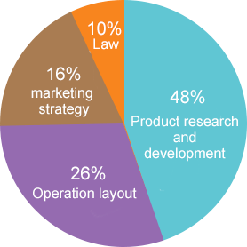

Mitech is an open source system based on block chaining. It can solve some defects of privacy, security and compatibility on existing Internet of things, so as to safely store data from the collector and verify it on the ledger. In the future, we will realize intelligent recognition, location, tracking, monitoring and management of a low-cost, privacy protected security network, with its own data network system.
Our core technology
1. communication: MI uses P2P technology to organize all network nodes. Each node realizes functions such as routing, new node identification and data dissemination through multicast, and intelligently identifies data information and completes sensor needs.
2. storage: MI data is stored in memory in a block chain data structure during runtime and eventually persisted in the database. For larger files, it can also be stored in a file system outside the chain, and the digest (digital fingerprint) is saved to the chain for self proof.
3. security mechanism: MI system uses a variety of cryptographic principles to carry out data encryption and privacy protection. Completely surpassing other block chain systems involved in financial applications, high and reliable security algorithms reach the national level, leading the world in efficiency.
4. consensus mechanism: each node in the MI system achieves a consistent strategy and method, which is selected flexibly according to the different types of system and the application scene. PBFT the consensus mechanism allows Byzantine fault tolerance. The consensus mechanism allows the participation of strong regulatory nodes, has the ability to classify the authority, the performance is higher, and the energy consumption is lower.
Token structure
Total amount of token：999,990,000
Angel wheel：200,000,000 1 years of lock - up, linear release every quarter, completed
private placement：99,990,000 MIT
Private equity ratio：1ETH=16666MIT
Soft roof：2500ETH
Hard top：5000ETH
Token format：ERC20
private placement time: In June 15, 2018, June 22th 20:00-2018, 2 days before the sale of the token, or 30% of the tokens sold (both of them), we will offer a 10% reward to the first group of investors.
Use of funds

48% Product research and development
26% Operation layout
16% marketing strategy
10% Law
©2017 MITECH | All Rights Reserved